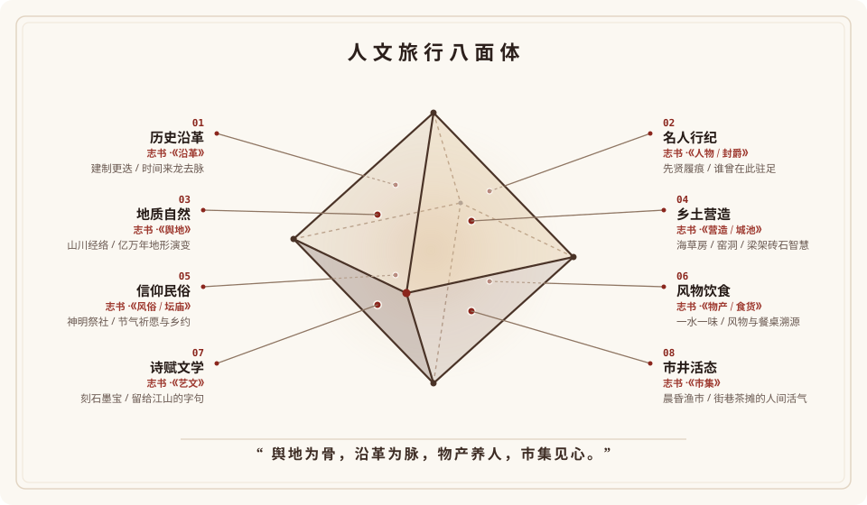
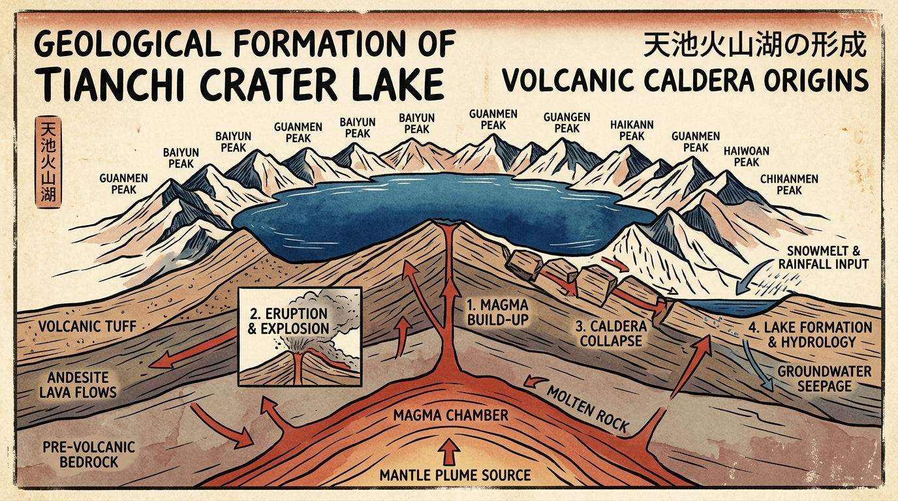

一、 异乡的体力活
现在的旅行，越来越像一场体力活。
打开手机，算法推给你一套又一套完美的图文：同一种色调的九宫格、同一个转角的路标、同一扇能看到日落的窗户。
看到别人的故事，我们下意识的选择，是去追随。
把路线存进收藏夹，买一样的车票，踩着别人踩过的脚印赶场。查不完的避坑指南，做不完的完美攻略。几点起、去哪拍、吃哪家网红店——在别人站过的位置排队，摆出类似的姿势，按下快门。
我们把异国他乡的街头，过成了精确到分钟的 KPI。我们把别人看过的风景，原封不动地走了一遍。
“可那是别人的故事，不是你的。”
算法把城市切成几个适合拍照的切片，我们就真的以为那是全部一座城市活了几百年、上千年，有它的地貌，有它的气候，有几十万人世代生活的规矩和脾气。人是到了，照片也有了，但好像只是换了个地方刷手机。
饱和度拉满的九宫格、排队两小时的热门机位、对照考卷打钩的日程表。
石缝里顽强钻出的青苔、面馆师傅切肉的手法、吹过巷口的风声与真实的人间烟火。
直到很久以后，看到某张照片或者偶然读到一本书，才突然拍大腿：原来当年那个路口，藏着这么有意思的故事？
可那时候，你已经不在现场了。
我不想再要一份密密麻麻的打卡清单。这次，我只想重新带上好奇心。去看看眼前这座山、这条街、这顿饭背后真正动人的地方。
二、 那么，以什么样的视角才能看懂一个地方？
好奇心有了，但我很快遇到了下一个问题：面对一座陌生的城市，庞大、芜杂、深厚，我到底该以什么样的视角去看它？
如果不去追随网红打卡点，我是不是又会陷入漫无目的的盲转？我不想靠偶然的撞大运，更不想被零碎的推荐牵着鼻子走。
直到我翻开了中国的《方志学》。
从宋元到明清，古人给一座府、一个县编修志书，从来不是想到哪儿写到哪儿。翻开历朝历代的《府志》《县志》，体例永远是严谨对仗的八大卷帙：
这是祖先在两千年的时间里，摸索出来描摹一块土地最完整、不遗漏的骨架。我想，放到今天也合适。

这八个切面，两两相对，咬合成一座城市的完整肌理：
地名因何而改，城池因何而筑；又有谁曾在这里驻足，留下过行迹与抉择。
山川地貌如何塑造了气候；当地人又怎样就地取材，用黄土、石头或海草盖起屋舍。
这里的人敬畏什么神明，过什么样的节令；每天吃的这碗饭，又是哪方水土长出来的味道。
古人在石碑与卷轴里写下了什么；而今天早晨的集市、黄昏的码头，正冒着怎样热气腾腾的营生。
三、 骨架有了，然后呢？
有了这套骨架，看一个地方不再是盲人摸象。但随之而来的问题是：去哪里找这些信息？
古籍县志晦涩难读，学术专著门槛太高。但在今天的网络上，其实散落着大量极好的内容：
- ✦电视台与专业制作组拍出的精品纪录片，把亿万年的地质演变和山川演化讲得清楚生动；
- ✦独立学者与文史爱好者写的网站博客，记录着鲜为人知的实地考据与老城掌故；
- ✦B站、抖音上那些真正懂行的创作者，用镜头拆解古建梁架，重现古战场与贸易商道；
- ✦小红书上也有那些走入偏远村落的行者，记录下老瓦当、手艺人与真实的人情烟火。
这些好内容一直都在，只是被算法推荐的机位和滤镜打散了。我希望能把关于这八个维度的优质信息，尽可能搜集齐全。不用生硬的说教，而是用生动直白的方式，把事情的来龙去脉讲明白。
我喜欢带着疑问的感觉去学习，去探索。
从小到大，当我们心里揣着一个好奇的问题时，学习从来不是苦差事。带着“为什么”走在路上，眼睛是亮的，周围的一砖一瓦才会从无声的背景板，变成活生生、可以被理解的世界。
为什么这座边境小城的招牌，同时写着两种文字？
为什么山顶会蓄着这么大一汪天池？周围十六座山峰为什么围成一圈？
为什么端上一碗冷面时，桌上总要配一把剪刀？
为什么老城墙的转角，当年会特意修成圆弧形？
光有文字和考据还不够，长篇大论很容易被丢在一边。必须用有趣味的版画与图解，把这些问题的答案画出来，让人一眼就能看懂，一眼就能记住。

所以，我想做一个产品。
我不想要又一个催人赶场的打卡软件，也不想要一个千篇一律的攻略生成器。
我想做一本真正属于旅人自己的书。在出发前，输入想去的地方，它以这套两千年的方志骨架为底，搜集全网深度的记录与故事，提炼出几个有趣的问题，配上好懂的插画，装订成册。
带着这本书出门。在路上核实自己的疑问，看懂真实的风景，然后，揣着属于自己的故事回来。